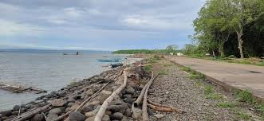

Panguil Bay Bridge
The Panguil Bay Bridge is a major infrastructure project in the Philippines that connects the provinces of Misamis Occidental and Lanao del Norte in Mindanao. It is designed to improve transportation links in the region and is expected to have a significant impact on regional development, particularly in terms of trade, tourism, and accessibility.
Key Facts and Features:
- Location: The bridge spans Panguil Bay, connecting the towns of Tangub City in Misamis Occidental and Tubod in Lanao del Norte.
- Length: The Panguil Bay Bridge will be the longest bridge in Mindanao, with a total length of approximately 3.7 kilometers (2.3 miles).
- Design: The bridge features a cable-stayed design, with multiple pylons supporting the structure. The design ensures durability and the ability to withstand natural forces such as typhoons and strong winds.
- Purpose: The bridge is part of the government's efforts to enhance connectivity between regions in Mindanao, providing a more direct route for travelers and goods between the provinces of Misamis Occidental, Lanao del Norte, and other nearby areas.
Importance of the Panguil Bay Bridge:
- Improved Accessibility: The Panguil Bay Bridge provides a more direct and convenient route, significantly cutting down travel time.
- Economic Boost: The bridge is expected to boost local economies by improving access to markets, ports, and tourism destinations.
- Tourism Development: It is expected to increase tourism in the region, drawing attention to the natural beauty of Panguil Bay.
- Strategic Location: The bridge serves as a link between the northern and southern parts of Mindanao.
- Environmental Considerations: The project has undergone environmental assessments to mitigate concerns regarding the marine ecosystem of Panguil Bay.
History and Timeline:
- The project has been in the planning stages for many years, with proposals for improving transportation links between Misamis Occidental and Lanao del Norte.
- The construction of the bridge started in 2020, supported by the Philippine government and funded by the China Export-Import Bank (Exim Bank).
- The bridge is part of the Build, Build, Build program of President Rodrigo Duterte.
Maloro Cove

Maloro Cove is a scenic and relatively secluded destination located in the municipality of Tangub City, in the province of Misamis Occidental, Mindanao, Philippines. It is known for its pristine natural beauty, including its clear waters, sandy shores, and lush surroundings, making it an emerging tourist spot in the region.
Key Features of Maloro Cove:
- Pristine Beach and Clear Waters: Clean, white sand beach and crystal-clear waters ideal for swimming and relaxing.
- Seclusion and Tranquility: Offers a serene atmosphere, making it a hidden gem for nature lovers and travelers looking for solitude.
- Scenic Views: Provides spectacular views of the surrounding sea, hills, and natural landscapes.
- Ideal for Water Activities: Great spot for swimming, snorkeling, and boating, with options for local boat rentals.
- Ecotourism Destination: Supports sustainable travel practices, promoting eco-friendly tourism initiatives in the region.
- Accessibility: Requires some effort to reach; visitors typically need to travel by land and possibly take a boat to access the cove.
Why Visit Maloro Cove?
- Nature and Relaxation: Perfect for unwinding in a peaceful environment.
- Avoid the Crowds: Not overcrowded, making it ideal for tranquility.
- Unspoiled Beauty: Experience a more authentic and natural part of Mindanao.
Hoyohoy View Deck
The Hoyohoy View Deck is a popular tourist spot located in Tangub City, Misamis Occidental, Mindanao, Philippines. It is known for offering panoramic and stunning views of the surrounding natural landscapes, including Panguil Bay, the Iligan Bay, and nearby mountains.
Key Features of Hoyohoy View Deck:
- Breathtaking Panoramic Views: Offers sweeping vistas, especially stunning at sunrise and sunset.
- Cool Climate and Scenic Atmosphere: Higher elevation contributes to a refreshing environment.
- Ideal for Nature Lovers and Adventure Seekers: Trails leading up to the top offer an adventure in addition to the views.
- Perfect for Family and Group Visits: Suitable for picnics, photography, and relaxation.
- Accessible for Tourists: Close to Tangub City proper and easily accessible by car.
Activities at Hoyohoy View Deck:
- Photography: Excellent photo opportunities for landscape photography.
- Sightseeing and Relaxation: Enjoy the views and serene atmosphere.
- Picnics and Socializing: Ideal for casual gatherings with family and friends.
- Hiking: Explore the natural surroundings while trekking to the view deck.